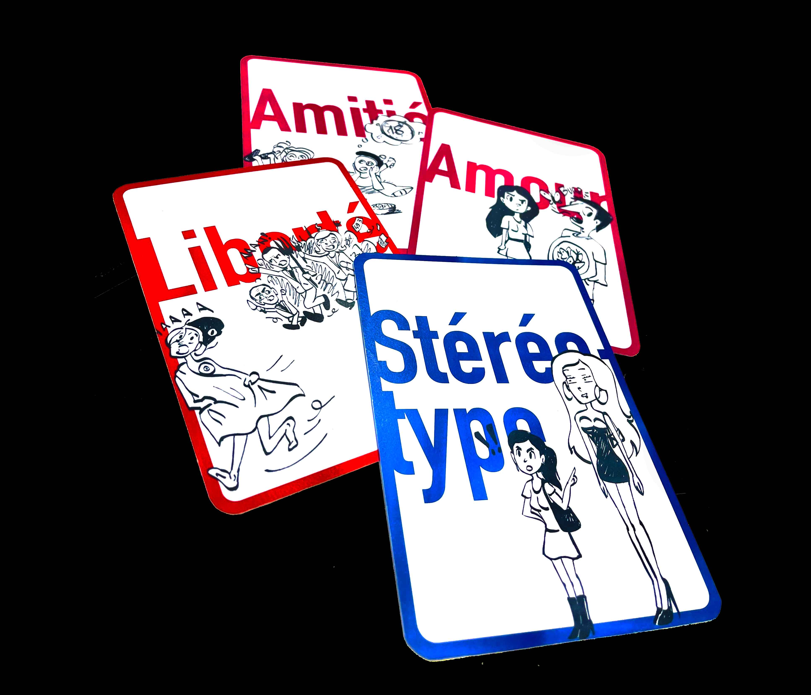
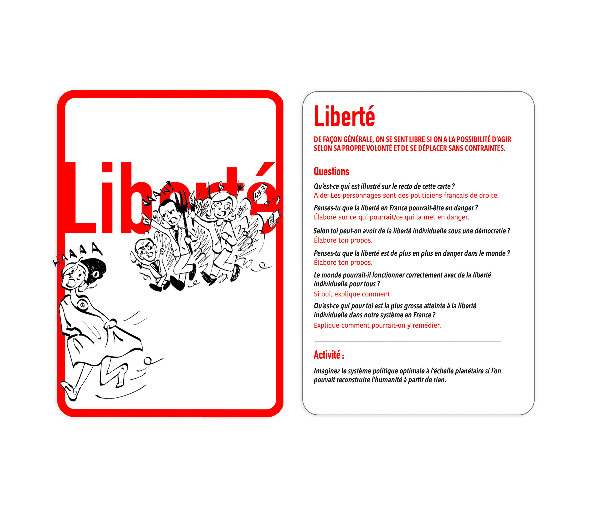
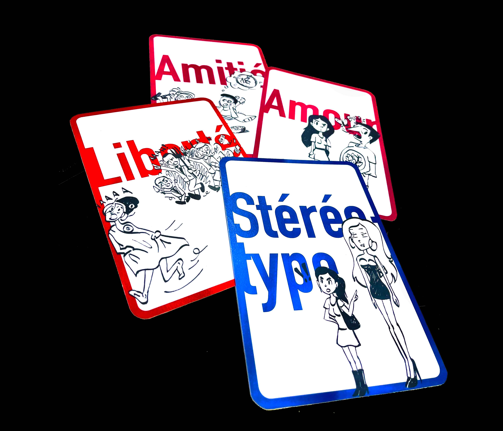
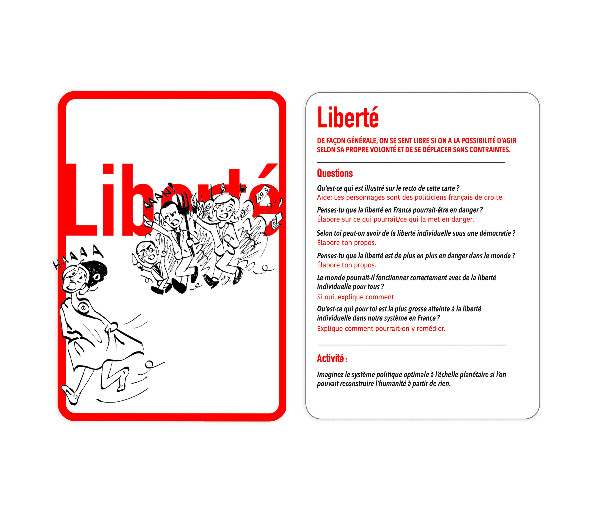

Projet de redesign de cartes, conçues par la philosophe Chiara Pastorini, présente lors de la finalisation du projet entant que commanditaire hypothétique. -mon atelier philo- a pour but d’inviter des jeunes enfants à discuter philosophie avec leur parents sur diverses thèmes de la vie.
Ce “jeu” est dédié à des enfants, le but de ce projet était de redesigner les cartes pour une cible adulte, afin d’inciter la réflexion et la discution en groupe sur des sujets de société. Le jeu comporte plusieurs familles de sujets et chaque carte aborde un thème avec des questions pour lancer la discussion.
Mon intention pour ce projet était d’aider à inciter le débat auprès d’adultes par des caricatures provoquent de sujets souvent sensibles, comme par exemple la question de l’incapacité des hommes à exprimer leurs sentiments, la question de l’impossibilité d’une relation platonique garçon/fille, ou encore les menaces que posent la politique actuellement.
 


